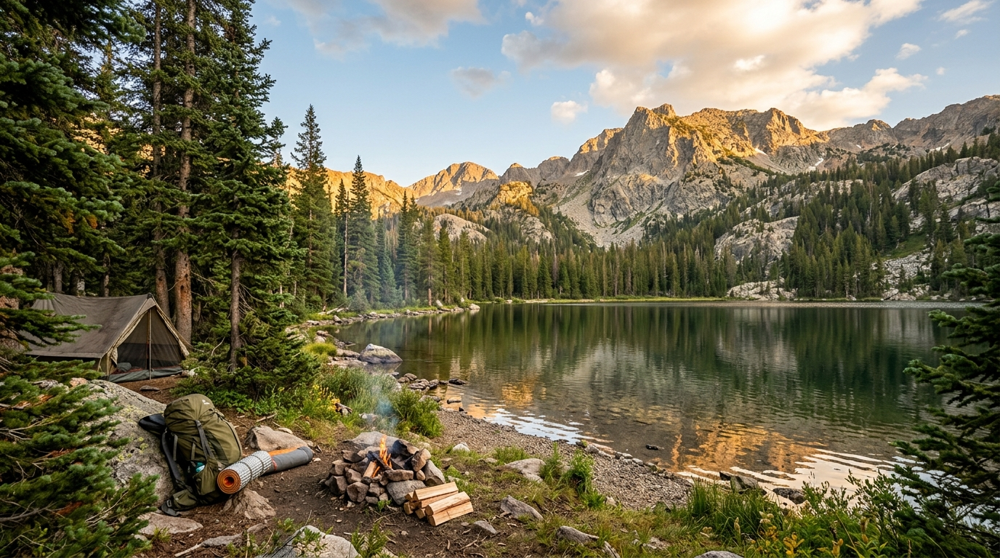

Outdoor Survival Skills
Learn simple outdoor skills for fire, shelter, water, navigation, and signaling.
Explore Skills
About This Website
Outdoor activities can sometimes become difficult when things do not go as planned. Learning basic survival skills can help you prepare before hiking, camping, or spending time outdoors.
This website organizes survival skills into four simple categories so they are easy to find and understand.
Get Started
Log in or create an account to explore outdoor survival skills.